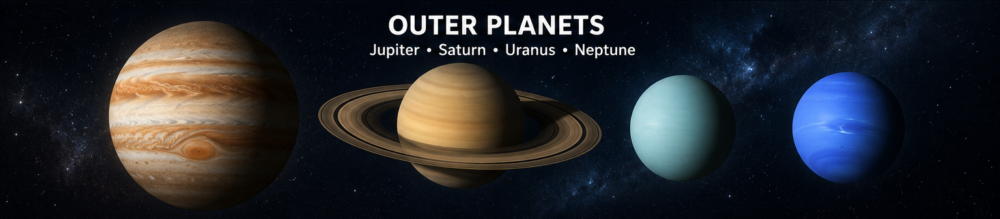

Jupiter, Saturn, Uranus, and Neptune
The outer planets are the four planets farthest from the Sun: Jupiter, Saturn, Uranus, and Neptune.
These planets are much larger and are mostly made of gas and ice. They are often called gas giants and ice giants.
